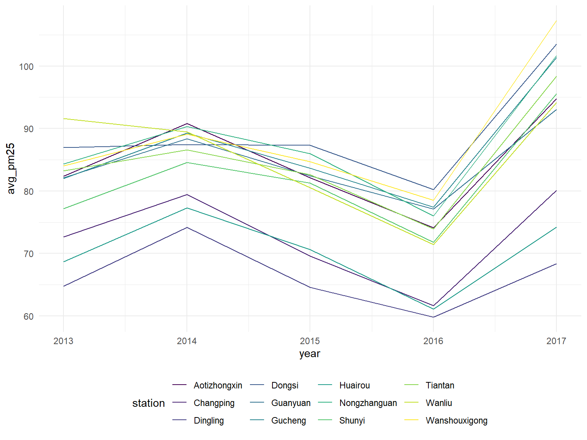
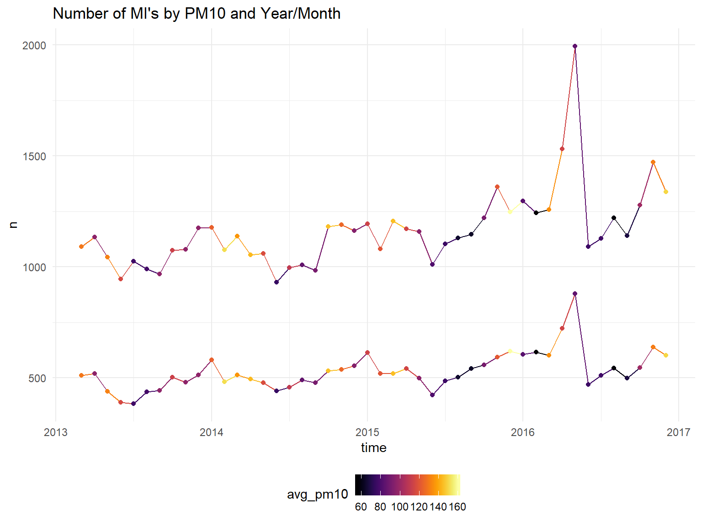
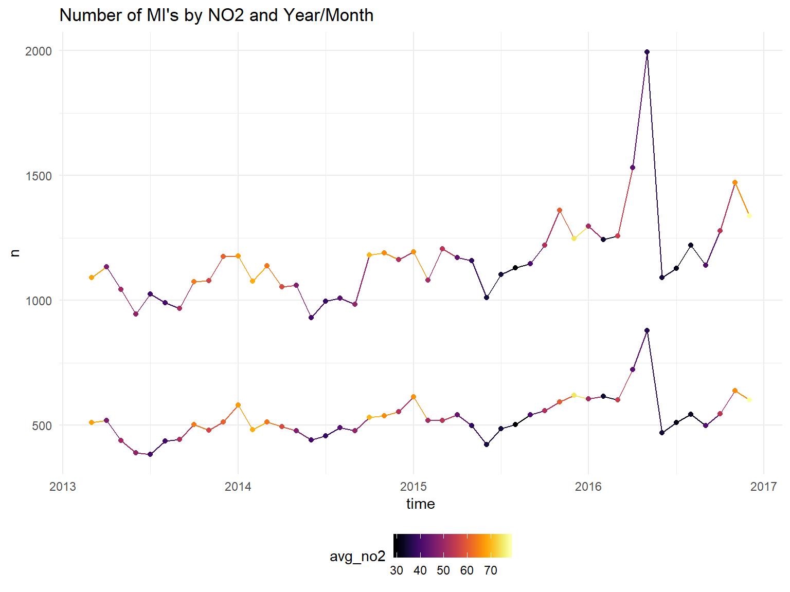
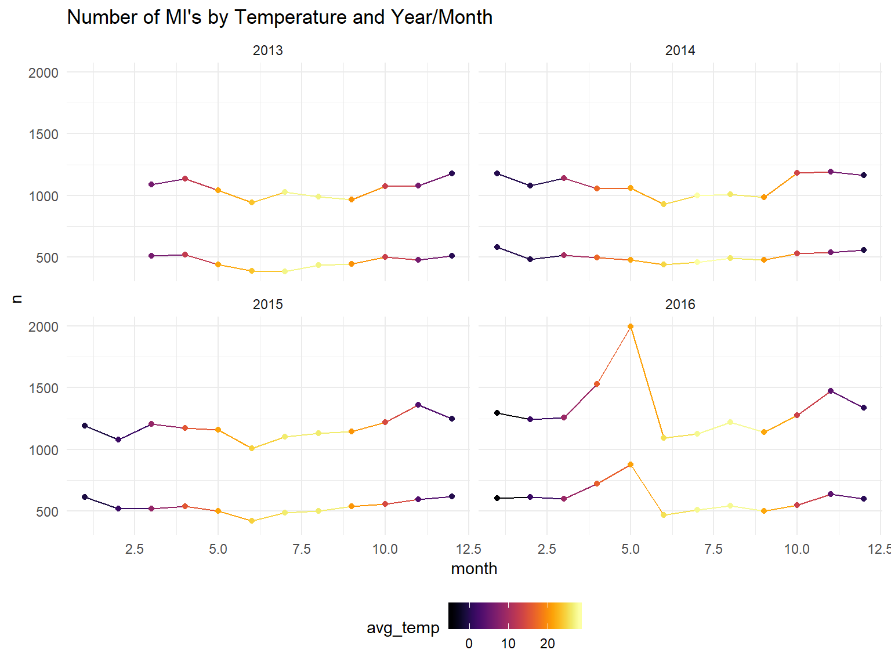
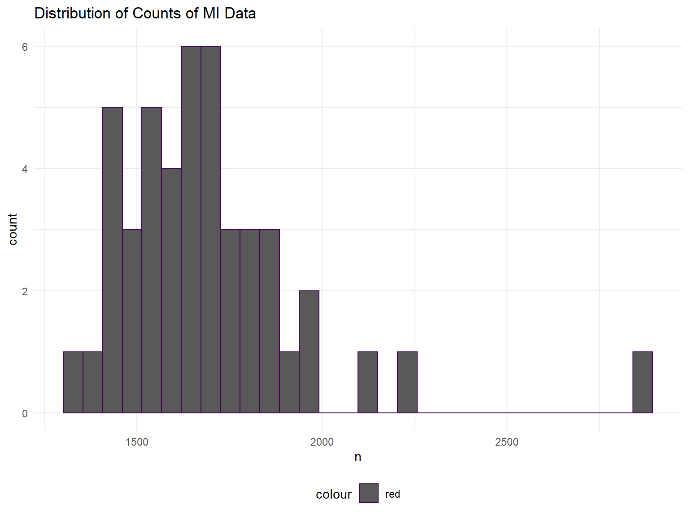

Project Report
David DeStephano dd2948, Connor Goldman cg3112, Sarah Munro sim2128, RuiJun Chen rc3179 Dec 5, 2019
Motivation
Human health is inextricably linked to the quality of the air we breath we every day. Outdoor air comprises a significant portion of our lifetime air exposure, and the quality of that air has been declining for some time. Air pollution is increasingly recognized as a factor contributing to global morbidity and mortality, particularly with respect to cardiovascular and respiratory health. In 2018, The World Health Organization released a report stating that:
→ 91% of the world population lived in places where WHO air quality guidelines were not met → Air pollution was estimated to cause 4.2 million premature deaths worldwide in 201 → Reduction in pollution would reduce the global burden of disease from heart disease, stroke, lung cancer, and chronic and acute respiratory diseases
**From WHO
Goals
There is a long way to go in improving ambient air quality, but there is a lot to be gained in doing so. Improved monitoring of factors that influence pollution, and increased awareness of associated health risks can advance the road to recovery. Through this project we strive to:
→ Replicate an air quality monitoring system that could be utilized by a government or health entity → Assess meteorological data as a predictor of air quality → Identify temporal trends, if any → Look for associations between air quality and cardiovascular health
Initial Questions
What meteorological factors are associated with increased PM 2.5 in different sites around Beijing. How are these numbers changing over time?
Our Data
Beijing is one of the industrial capitals of the world, and a notorious source of air pollution. For our primary analyses we looked at a dataset describing meteorological and air quality data from 12 sites in Beijing, China over the years 2013 - 2017. This data comes from The UCI Machine Learning Repository. Air quality was measured as a concentration of particulate matter 2.5 (PM2.5) and particulate matter 10 (PM10). PM2.5 is associated with greater health risks, because the smaller size (<2.5um) makes it more efficient at penetrating deeper into the respiratory system. For this reason we chose to analyze PM2.5 as the outcome of interest. (https://www3.epa.gov/ttn/amtic/files/ambient/pm25/spec/drispec.pdf).
Our air pollution dataset included the following variables:
- No: row number
- year: year of data in this row
- month: month of data in this row
- day: day of data in this row
- hour: hour of data in this row
- PM2.5: PM2.5 concentration (ug/m^3)
- PM10: PM10 concentration (ug/m^3)
- SO2: SO2 concentration (ug/m^3)
- NO2: NO2 concentration (ug/m^3)
- CO: CO concentration (ug/m^3)
- O3: O3 concentration (ug/m^3)
- TEMP: temperature (degree Celsius)
- PRES: pressure (hPa)
- DEWP: dew point temperature (degree Celsius)
- RAIN: precipitation (mm)
- wd: wind direction
- WSPM: wind speed (m/s)
- station: name of the air-quality monitoring site
For our secondary analyses, we sought to isolate any associations between air quality and health outcomes in Beijing. We modeled acute myocardial infarction (AMI) as the outcome using the dataset from Liu et al.. The data was collected by the public health information center of Beijing, and includes AMI hospital admissions in Beijing for each month between January 1, 2013 and December 31, 2016.
The following variables were included:
- Gender
- Admission date(year)
- Admission date(month)
- Main discharge diagnosis
Exploratory Analysis
Loading and tidying the data
We loaded the data from csv files obtained from the data archive listed above
files = list.files("./PRSA_Data_20130301-20170228", full.names = TRUE)
all_df = map_df(files, read_csv) %>%
bind_rows() %>%
janitor::clean_names()We identified a total of 420768 rows/observations, and a total of 18 variables or columns which include the following: no, year, month, day, hour, pm2_5, pm10, so2, no2, co, o3, temp, pres, dewp, rain, wd, wspm, station. We then wanted to characterize the amount of data present and missing for each variable:
Total amount of data:
colSums(!is.na(all_df))## no year month day hour pm2_5 pm10 so2 no2
## 420768 420768 420768 420768 420768 412029 414319 411747 408652
## co o3 temp pres dewp rain wd wspm station
## 400067 407491 420370 420375 420365 420378 418946 420450 420768Amount of missing data for each variable:
colSums(is.na(all_df))## no year month day hour pm2_5 pm10 so2 no2
## 0 0 0 0 0 8739 6449 9021 12116
## co o3 temp pres dewp rain wd wspm station
## 20701 13277 398 393 403 390 1822 318 0From this, it appears that all observations(rows) have date, time, and station information. The number of complete observations with all variables filled in is 382168 which represents the vast majority of the observations.
In tidying the data, we found there is a column/variable ‘no’ which just seems to count rows, which is not needed and removed. We also changed wd and station into factors, added seasons, and created a variable for seasonal years (since winter spans over two years, this variable was created to only be coded as the year in which winter began). Date and datetime variables were also created.
all_df =
all_df %>%
select(-no) %>%
mutate(
wd = as.factor(wd),
station = as.factor(station),
date = as.Date(str_c(year, '-', month, '-', day)),
datetime = as.POSIXct(str_c(year, '-', month, '-', day, ' ', "00:", hour,":00")),
season = case_when(
(month < 3) ~ "winter", #start of Spring is 3/20
(month == 3 & day < 20) ~ "winter",
(month < 6) ~ "spring", #start of Summer is 6/21
(month == 6 & day < 21) ~ "spring",
(month < 9) ~ "summer", #start of Fall is 9/22
(month == 9 & day < 22) ~ "summer",
(month < 12) ~ "fall", #start of Winter is 12/21
(month == 12 & day < 21) ~ "fall",
(month == 12 & day >= 21) ~ "winter"
),
seasonal_year=if_else(month<4 & season=="winter" & year ==2014, 2013,
if_else(month < 4 & season=="winter" & year ==2015, 2014,
if_else(month < 4 & season=="winter" & year ==2016, 2015,
if_else(month < 4 & season=="winter" & year ==2017, 2016, year)))),
season_and= paste(season, " ", seasonal_year)
)Visualizing the missing data over time
missing = all_df %>%
select(-year, -season, -seasonal_year, -season_and, -datetime, -month, -day, -hour) %>% #the original data except the ones we know are complete
is.na() %>%
as_tibble() %>%
mutate(
date = all_df$date,
station = all_df$station
) %>%
pivot_longer(
cols = pm2_5:wspm
)
missing %>%
ggplot(aes(x =date, y = name, fill = value)) +
geom_raster(alpha=0.8) +
scale_fill_discrete(name = "", labels = c("Present", "Missing")) +
labs(x = "Variable",y = "Date", title = "Missing values over time") +
coord_flip() 
And now visualizing missing data over time across stations:
missing %>%
ggplot(aes(x =date, y = name, fill = value)) +
geom_raster(alpha=0.8) +
scale_fill_discrete(name = "", labels = c("Missing", "Present")) +
labs(x = "Time",y = "Variable", title = "Missing values over time by station") +
facet_grid(station~.) 
Our primary outcome of interest is PM2.5, and can be summarized as follows:
all_df %>% pull(pm2_5) %>% summary## Min. 1st Qu. Median Mean 3rd Qu. Max. NA's
## 2.00 20.00 55.00 79.79 111.00 999.00 8739Looking at PM2.5 over time:
summary## standardGeneric for "summary" defined from package "base"
##
## function (object, ...)
## standardGeneric("summary")
## <environment: 0x000000001ee4f700>
## Methods may be defined for arguments: object
## Use showMethods("summary") for currently available ones.all_df %>%
ggplot(aes(x = date, y = pm2_5)) +
geom_point() +
geom_smooth()## `geom_smooth()` using method = 'gam' and formula 'y ~ s(x, bs = "cs")'
Looking at PM2.5 over time by station:
all_df %>%
ggplot(aes(x = date, y = pm2_5)) +
geom_point() +
geom_smooth() +
facet_grid(~station)## `geom_smooth()` using method = 'gam' and formula 'y ~ s(x, bs = "cs")'Looking at PM2.5 by seasons:
all_df %>%
mutate(
fct_reorder(season, pm2_5)
) %>%
ggplot(aes(x = season, y = pm2_5)) +
geom_boxplot()
Kind of hard to distinguish, will try limiting scale of y-axis and try a violin plot
all_df %>%
mutate(
fct_reorder(season, pm2_5)
) %>%
ggplot(aes(x = season, y = pm2_5)) +
geom_boxplot() +
ylim(0, 250)
all_df %>%
mutate(
fct_reorder(season, pm2_5)
) %>%
ggplot(aes(x = season, y = pm2_5)) +
geom_violin() +
ylim(0, 250)
Overall seems fairly similar across seasons, but technically highest in the winter, with a number of very high outlier values as well
Average PM 25 by year for all stations
all_df %>%
group_by(year) %>%
summarize(avg_pm25=mean(pm2_5, na.rm = TRUE)) %>%
ggplot(aes(x=year, y=avg_pm25)) +
geom_line()
Average PM 25 by year for each station
all_df %>%
group_by(year, station) %>%
summarize(avg_pm25=mean(pm2_5, na.rm = TRUE)) %>%
ggplot(aes(x=year, y=avg_pm25, color=station, group=station)) +
geom_line()
We can see that each individual station seems to follow the same yearly average pm 2.5 trend
Average PM 25 by year and season for each station
all_df %>%
group_by(season, seasonal_year, station) %>%
summarize(avg_pm25=mean(pm2_5, na.rm = TRUE)) %>%
ggplot(aes(x=season, y=avg_pm25, color=station, group=station)) +
geom_line()+
facet_wrap(seasonal_year~.) +
ggtitle("Average PM2.5 by Seasonal Years")
Average PM 25 by year and season for each station
all_df %>%
mutate(season_and=factor(season_and, levels = c("spring 2013", "summer 2013", "fall 2013", "winter 2013",
"spring 2014", "summer 2014", "fall 2014", "winter 2014",
"spring 2015", "summer 2015", "fall 2015", "winter 2015",
"spring 2016", "summer 2016", "fall 2016", "winter 2016"))) %>%
group_by(season_and, station) %>%
summarize(avg_pm25=mean(pm2_5, na.rm = TRUE)) %>%
ggplot(aes(x=season_and, y=avg_pm25, color=station, group=station)) +
geom_line()+
ggtitle("Average PM2.5 by Seasonal Years") +
theme(axis.text.x = element_text(angle = 45, hjust = 1))
#need to change wspm to CUMULATIVE wind speed for month or direction
all_df %>%
filter(station=="Dingling") %>%
ggplot(aes(x=dewp, y=wspm, color=pm2_5)) +
geom_point(alpha=0.10) +
scale_color_gradient(low="blue", high="red")Motherload of all scatterplots (Plotting everything )
Looking at scatter plots of every variable against PM2.5 to look for potential correlation
## Just FYI, this takes a long time to run. And the plots will take up 900MB of memory
#So for now I've set eval=false, but I'm pushing the image it generated, called all_variables_plot.png
par(mfrow = c(4, 5))
vars = all_df %>% select(-pm2_5, -year, -month, -day, -date, -season) %>% colnames()
plots = list()
for (i in 1:length(vars)) {
plots[[i]] = ggplot(all_df, aes_string(x = vars[i], y = "pm2_5")) + geom_point()
}
do.call(grid.arrange, plots)
all variables scatterplots
Pearson Correlation Coefficients:
all_df %>%
select(-wd, -station, -date, -datetime, -season, -seasonal_year, -season_and, -hour, -year, -month, -day) %>%
map(as.numeric) %>%
as.data.frame() %>%
cor(use = "complete.obs") %>%
corrplot(method = "square", addCoef.col = "black", tl.col="black", tl.srt=45, insig = "blank",
# hide correlation coefficient on the principal diagonal
diag=FALSE, number.cex = .7)Findings
We looked at correlations between PM 2.5 and the meteorological variables, including dewpoint, windspeed.
We also calulcated spearman’s correlation coefficients to evaluate the inter-relations between air pollutants and weather conditions.
Temperature is correlated with our pollutant concentration, which are all also correlated with eachother, while windspeed has the most effect on decreasing the concentration of these pollutants.
Variables which seem correlated with PM2.5 include (not surprisingly) PM10, but also rain, wind speed, o3 all seem to be strongly correlated. In addition, no2, so2, and possibly temperature, pressure and dew point but in a non-linear fashion
Additional Analysis
Three models were developed for analysis of weather conditions and their association with PM2.5. A multivariable linear regression, a mixed model, and a Mixed Model for Longitudinal Continuous Data were developed to examine the variables of interest.
Almost every variable is significant, however, station, windspeed, season, and windspeed all have high effect sizes. Rain, dewpoint, temp also have moderate effect sizes.
What meteorological variables influence PM 2.5?
Even though predictors are not independent, will model using linear regression before a longitudinal model
###Remove timeseries variables:
reg<-all_df %>% select(-date,-datetime, -month,-day,-hour)
full <- lm(pm2_5 ~ ., data = reg)
tab<-full %>% broom::tidy()
knitr::kable(tab, digits = 3)| term | estimate | std.error | statistic | p.value |
|---|---|---|---|---|
| (Intercept) | -2976.035 | 582.399 | -5.110 | 0.000 |
| year | 5.810 | 0.263 | 22.091 | 0.000 |
| pm10 | 0.536 | 0.001 | 616.900 | 0.000 |
| so2 | 0.110 | 0.003 | 32.611 | 0.000 |
| no2 | 0.123 | 0.003 | 46.056 | 0.000 |
| co | 0.019 | 0.000 | 256.446 | 0.000 |
| o3 | 0.106 | 0.001 | 77.453 | 0.000 |
| temp | -0.677 | 0.013 | -52.532 | 0.000 |
| pres | 0.299 | 0.010 | 30.721 | 0.000 |
| dewp | 1.587 | 0.009 | 168.552 | 0.000 |
| rain | -0.335 | 0.059 | -5.641 | 0.000 |
| wdENE | -0.385 | 0.248 | -1.550 | 0.121 |
| wdESE | 1.117 | 0.270 | 4.136 | 0.000 |
| wdN | 0.547 | 0.258 | 2.118 | 0.034 |
| wdNE | 0.125 | 0.238 | 0.523 | 0.601 |
| wdNNE | 0.045 | 0.263 | 0.172 | 0.863 |
| wdNNW | 0.653 | 0.274 | 2.389 | 0.017 |
| wdNW | -0.278 | 0.259 | -1.076 | 0.282 |
| wdS | -0.091 | 0.293 | -0.312 | 0.755 |
| wdSE | -0.696 | 0.287 | -2.425 | 0.015 |
| wdSSE | -0.276 | 0.301 | -0.916 | 0.360 |
| wdSSW | -0.147 | 0.281 | -0.523 | 0.601 |
| wdSW | -1.690 | 0.264 | -6.414 | 0.000 |
| wdW | -2.462 | 0.300 | -8.199 | 0.000 |
| wdWNW | -1.394 | 0.279 | -4.993 | 0.000 |
| wdWSW | -1.639 | 0.288 | -5.687 | 0.000 |
| wspm | -0.443 | 0.052 | -8.541 | 0.000 |
| stationChangping | 4.431 | 0.244 | 18.196 | 0.000 |
| stationDingling | 11.372 | 0.252 | 45.135 | 0.000 |
| stationDongsi | 2.663 | 0.240 | 11.077 | 0.000 |
| stationGuanyuan | 1.314 | 0.236 | 5.576 | 0.000 |
| stationGucheng | -2.366 | 0.240 | -9.856 | 0.000 |
| stationHuairou | 7.018 | 0.251 | 27.939 | 0.000 |
| stationNongzhanguan | 1.994 | 0.235 | 8.496 | 0.000 |
| stationShunyi | 6.851 | 0.244 | 28.064 | 0.000 |
| stationTiantan | 2.868 | 0.236 | 12.169 | 0.000 |
| stationWanliu | -0.696 | 0.240 | -2.902 | 0.004 |
| stationWanshouxigong | 0.614 | 0.236 | 2.604 | 0.009 |
| seasonspring | -13.535 | 0.922 | -14.687 | 0.000 |
| seasonsummer | -19.795 | 0.930 | -21.291 | 0.000 |
| seasonwinter | 1.082 | 0.797 | 1.358 | 0.175 |
| seasonal_year | -4.484 | 0.386 | -11.625 | 0.000 |
| season_andfall 2014 | -5.734 | 0.410 | -13.982 | 0.000 |
| season_andfall 2015 | -1.082 | 0.648 | -1.670 | 0.095 |
| season_andfall 2016 | -6.890 | 0.914 | -7.536 | 0.000 |
| season_andspring 2013 | 5.622 | 0.910 | 6.178 | 0.000 |
| season_andspring 2014 | -1.564 | 0.639 | -2.448 | 0.014 |
| season_andspring 2015 | -6.313 | 0.394 | -16.025 | 0.000 |
| season_andsummer 2013 | 4.266 | 0.911 | 4.682 | 0.000 |
| season_andsummer 2014 | 2.532 | 0.639 | 3.962 | 0.000 |
| season_andsummer 2015 | -0.799 | 0.395 | -2.023 | 0.043 |
| season_andwinter 2013 | -0.960 | 0.747 | -1.284 | 0.199 |
| season_andwinter 2014 | -1.359 | 0.478 | -2.843 | 0.004 |
Mixed Model
all_df %>%
lme4::lmer(pm2_5 ~ year + season + so2 + no2 + co + o3 + temp + dewp + rain + wd + wspm + (1 | station), data = .) %>%
broom::tidy() %>%
knitr::kable(digits = 3)| term | estimate | std.error | statistic | group |
|---|---|---|---|---|
| (Intercept) | -1571.860 | 131.345 | -11.967 | fixed |
| year | 0.772 | 0.065 | 11.843 | fixed |
| seasonspring | -8.107 | 0.230 | -35.256 | fixed |
| seasonsummer | -28.170 | 0.294 | -95.755 | fixed |
| seasonwinter | 8.444 | 0.245 | 34.490 | fixed |
| so2 | 0.305 | 0.005 | 67.163 | fixed |
| no2 | 0.728 | 0.004 | 207.127 | fixed |
| co | 0.038 | 0.000 | 390.292 | fixed |
| o3 | 0.250 | 0.002 | 130.725 | fixed |
| temp | -0.866 | 0.017 | -51.273 | fixed |
| dewp | 2.241 | 0.013 | 175.111 | fixed |
| rain | -1.190 | 0.085 | -14.077 | fixed |
| wdENE | -2.723 | 0.354 | -7.685 | fixed |
| wdESE | 2.526 | 0.386 | 6.550 | fixed |
| wdN | 1.053 | 0.368 | 2.858 | fixed |
| wdNE | -1.944 | 0.339 | -5.737 | fixed |
| wdNNE | -2.277 | 0.375 | -6.075 | fixed |
| wdNNW | 1.923 | 0.390 | 4.933 | fixed |
| wdNW | 2.151 | 0.368 | 5.839 | fixed |
| wdS | 0.739 | 0.418 | 1.767 | fixed |
| wdSE | 1.815 | 0.409 | 4.434 | fixed |
| wdSSE | 1.990 | 0.430 | 4.631 | fixed |
| wdSSW | 1.100 | 0.400 | 2.749 | fixed |
| wdSW | -1.142 | 0.376 | -3.038 | fixed |
| wdW | -3.741 | 0.428 | -8.738 | fixed |
| wdWNW | -0.615 | 0.398 | -1.546 | fixed |
| wdWSW | -2.385 | 0.411 | -5.799 | fixed |
| wspm | 4.219 | 0.073 | 57.781 | fixed |
| sd_(Intercept).station | 7.310 | NA | NA | station |
| sd_Observation.Residual | 42.580 | NA | NA | Residual |
Mixed Model for Longitudinal Continuous Data
mixed<-all_df %>%
lme4::lmer(pm2_5 ~ year + season + so2 + no2 + co + o3 + temp + dewp + rain + wd + wspm + datetime + (1 | station), data = .)
mixed %>% broom::tidy() %>% knitr::kable(digits = 3)| term | estimate | std.error | statistic | group |
|---|---|---|---|---|
| (Intercept) | -50701.822 | 861.052 | -58.884 | fixed |
| year | 25.734 | 0.437 | 58.854 | fixed |
| seasonspring | -20.355 | 0.312 | -65.209 | fixed |
| seasonsummer | -33.817 | 0.309 | -109.505 | fixed |
| seasonwinter | -7.326 | 0.366 | -20.010 | fixed |
| so2 | 0.276 | 0.005 | 60.756 | fixed |
| no2 | 0.729 | 0.004 | 208.209 | fixed |
| co | 0.038 | 0.000 | 396.177 | fixed |
| o3 | 0.252 | 0.002 | 132.171 | fixed |
| temp | -0.892 | 0.017 | -52.972 | fixed |
| dewp | 2.234 | 0.013 | 175.342 | fixed |
| rain | -1.224 | 0.084 | -14.535 | fixed |
| wdENE | -2.557 | 0.353 | -7.248 | fixed |
| wdESE | 2.392 | 0.384 | 6.229 | fixed |
| wdN | 1.125 | 0.367 | 3.069 | fixed |
| wdNE | -1.945 | 0.337 | -5.764 | fixed |
| wdNNE | -2.045 | 0.373 | -5.480 | fixed |
| wdNNW | 2.130 | 0.388 | 5.487 | fixed |
| wdNW | 2.283 | 0.367 | 6.226 | fixed |
| wdS | 0.760 | 0.416 | 1.827 | fixed |
| wdSE | 1.550 | 0.408 | 3.802 | fixed |
| wdSSE | 1.945 | 0.428 | 4.546 | fixed |
| wdSSW | 1.083 | 0.398 | 2.719 | fixed |
| wdSW | -1.242 | 0.374 | -3.319 | fixed |
| wdW | -3.541 | 0.426 | -8.305 | fixed |
| wdWNW | -0.271 | 0.396 | -0.684 | fixed |
| wdWSW | -2.137 | 0.409 | -5.220 | fixed |
| wspm | 4.256 | 0.073 | 58.546 | fixed |
| datetime | 0.000 | 0.000 | -57.728 | fixed |
| sd_(Intercept).station | 7.346 | NA | NA | station |
| sd_Observation.Residual | 42.396 | NA | NA | Residual |
Linking to health data
Is pm 2.5, season, NO2, or CO associated with CVD?
We used the following articles when preparing to analyze pollutions affect on AMI 1, 2
cvd<-read_csv("./patient_mi_data/patients_mi.csv") %>% janitor::clean_names()## Parsed with column specification:
## cols(
## gender = col_character(),
## `admission date(year)` = col_double(),
## `admission date(month)` = col_double(),
## `main discharge diagnosis` = col_character()
## )cvd2<- cvd %>%
group_by(admission_date_year, admission_date_month, gender) %>%
summarise(n = n()) %>%
rename(year=admission_date_year) %>%
rename(month=admission_date_month)
pollution<-all_df %>%
group_by(year, month) %>%
summarize(avg_pm2_5=mean(pm2_5, na.rm=TRUE),
avg_pm10=mean(pm10, na.rm=TRUE),
avg_co=mean(co, na.rm=TRUE),
avg_temp=mean(temp, na.rm=TRUE),
avg_no2=mean(no2, na.rm=TRUE))
model_data <- left_join(pollution, cvd2, by=c("year", "month")) %>%
na.omit() model_data$time <- as.yearmon(paste(model_data$year, model_data$month), "%Y %m")
# Sys.getlocale("LC_TIME")
#
# model_data<-model_data %>%
# unite(time, c(month, year), sep = "-", remove = FALSE) %>%
# mutate(time = parse_date_time(time, "my"), local="English_United States.1252")Time Series of AMI Hospitalizations Grouping by Gender
model_data %>%
ggplot(aes(x=time, y=n, color=avg_pm2_5, group=gender)) +
geom_line()+
geom_point(aes(size = avg_co))+
scale_color_viridis(option = "B")+
ggtitle("Number of MI's by PM2.5 and Year/Month") ## Don't know how to automatically pick scale for object of type yearmon. Defaulting to continuous.model_data %>%
ggplot(aes(x=time, y=n, color=avg_pm2_5, group=gender)) +
geom_line()+
geom_point()+
scale_color_viridis(option = "B")+
ggtitle("Average PM2.5 by Years")## Don't know how to automatically pick scale for object of type yearmon. Defaulting to continuous.model_data %>%
ggplot(aes(x=time, y=n, color=avg_pm10, group=gender)) +
geom_line()+
geom_point()+
scale_color_viridis(option = "B")+
ggtitle("Number of MI's by PM10 and Year/Month")## Don't know how to automatically pick scale for object of type yearmon. Defaulting to continuous.
model_data %>%
ggplot(aes(x=time, y=n, color=avg_co, group=gender)) +
geom_line()+
geom_point()+
scale_color_viridis(option = "B")+
ggtitle("Number of MI's by Carbon Monoxide and Year/Month")## Don't know how to automatically pick scale for object of type yearmon. Defaulting to continuous.model_data %>%
ggplot(aes(x=time, y=n, color=avg_no2, group=gender)) +
geom_line()+
geom_point()+
scale_color_viridis(option = "B")+
ggtitle("Number of MI's by NO2 and Year/Month")## Don't know how to automatically pick scale for object of type yearmon. Defaulting to continuous.
It does appear the hospitalizations are higher in winter months. Unfortunately, we will not be able to draw strong conclusions about the effect pollution on heart attacks since it is so strongly correlated with the month/season. We can try to control for temperature instead of month?
model_data %>%
ggplot(aes(x=month, y=n, color=avg_temp, group=gender)) +
geom_line()+
geom_point()+
scale_color_viridis(option = "B")+
facet_wrap(year~.) +
ggtitle("Number of MI's by Temperature and Year/Month")
For the analysis we have to use month because we have no data on days of the month to separate analysis into seasons.
The count data we are using is the number of people admitted for MI per month.
Distribution of the counts
count<- cvd %>%
group_by(admission_date_year, admission_date_month) %>%
summarise(n = n()) %>%
rename(year=admission_date_year) %>%
rename(month=admission_date_month)
count2<-all_df %>%
group_by(year, month) %>%
summarize(avg_pm2_5=mean(pm2_5, na.rm=TRUE),
avg_pm10=mean(pm10, na.rm=TRUE),
avg_co=mean(co, na.rm=TRUE),
avg_temp=mean(temp, na.rm=TRUE),
avg_no2=mean(no2, na.rm=TRUE))
count3 <- left_join(count, count2, by=c("year", "month")) %>%
na.omit()
count3 %>%
ggplot(aes(x = n)) + geom_histogram(aes(color = "red")) + labs(title = "Distribution of Counts of MI Data")## `stat_bin()` using `bins = 30`. Pick better value with `binwidth`.
The counts appear to be normally distributed, no overdispersion appears to be present, although we have not formally checked.
We could use a rate for the population of beijing for each year (and month), but from 2014 to 2018, the annual growth rate has been 0.3 percent. Beijing’s population peaked at 21.73 million residents in 2016. Source. For this reason (population numbers have been fairly flat) we decided to just use pure count data.
The count data is in the following format:
head(model_data)## # A tibble: 6 x 10
## # Groups: year [1]
## year month avg_pm2_5 avg_pm10 avg_co avg_temp avg_no2 gender n time
## <dbl> <dbl> <dbl> <dbl> <dbl> <dbl> <dbl> <chr> <int> <yea>
## 1 2013 3 105. 129. 1457. 5.99 67.9 female 511 Mar ~
## 2 2013 3 105. 129. 1457. 5.99 67.9 male 1090 Mar ~
## 3 2013 4 62.1 95.9 903. 12.4 46.3 female 519 Apr ~
## 4 2013 4 62.1 95.9 903. 12.4 46.3 male 1135 Apr ~
## 5 2013 5 81.8 131. 999. 21.7 50.6 female 439 May ~
## 6 2013 5 81.8 131. 999. 21.7 50.6 male 1043 May ~Should we not include temp? Most is significant when not included.
m1 <- glm(n ~ avg_pm2_5 + avg_pm10 + avg_co + avg_no2 + gender, family="poisson", data=model_data)
tab<-m1 %>% broom::tidy()
knitr::kable(tab, digits = 6)| term | estimate | std.error | statistic | p.value |
|---|---|---|---|---|
| (Intercept) | 6.195519 | 0.016903 | 366.540815 | 0.000000 |
| avg_pm2_5 | -0.003976 | 0.000405 | -9.829240 | 0.000000 |
| avg_pm10 | 0.002459 | 0.000321 | 7.659630 | 0.000000 |
| avg_co | 0.000144 | 0.000017 | 8.385587 | 0.000000 |
| avg_no2 | -0.000869 | 0.000707 | -1.229575 | 0.218856 |
| gendermale | 0.789288 | 0.007736 | 102.026556 | 0.000000 |
Including temp?
m1 <- glm(n ~ avg_pm2_5 + avg_pm10 + avg_co + avg_no2 + avg_temp + gender, family="poisson", data=model_data)
#avg_pm2_5*avg_temp + avg_co*avg_temp
tab<-m1 %>% broom::tidy()
knitr::kable(tab, digits = 3)| term | estimate | std.error | statistic | p.value |
|---|---|---|---|---|
| (Intercept) | 6.558 | 0.031 | 210.804 | 0.000 |
| avg_pm2_5 | -0.001 | 0.000 | -1.967 | 0.049 |
| avg_pm10 | 0.002 | 0.000 | 4.808 | 0.000 |
| avg_co | 0.000 | 0.000 | -1.552 | 0.121 |
| avg_no2 | -0.004 | 0.001 | -5.636 | 0.000 |
| avg_temp | -0.009 | 0.001 | -13.747 | 0.000 |
| gendermale | 0.789 | 0.008 | 102.027 | 0.000 |
What about including month and year??
model_data<-model_data%>%
mutate(month=factor(month))
m1 <- glm(n ~ avg_pm2_5 + avg_pm10 + avg_co + avg_no2 + month + year + gender, family="poisson", data=model_data)
#avg_pm2_5*avg_temp + avg_co*avg_temp
tab<-m1 %>% broom::tidy()
knitr::kable(tab, digits = 3)| term | estimate | std.error | statistic | p.value |
|---|---|---|---|---|
| (Intercept) | -159.489 | 8.401 | -18.985 | 0.000 |
| avg_pm2_5 | 0.004 | 0.001 | 4.550 | 0.000 |
| avg_pm10 | -0.004 | 0.001 | -8.247 | 0.000 |
| avg_co | 0.000 | 0.000 | -1.420 | 0.156 |
| avg_no2 | 0.002 | 0.001 | 1.588 | 0.112 |
| month10 | -0.056 | 0.042 | -1.328 | 0.184 |
| month11 | 0.061 | 0.022 | 2.843 | 0.004 |
| month12 | 0.058 | 0.020 | 2.884 | 0.004 |
| month2 | -0.108 | 0.033 | -3.282 | 0.001 |
| month3 | 0.043 | 0.036 | 1.209 | 0.227 |
| month4 | 0.087 | 0.047 | 1.829 | 0.067 |
| month5 | 0.135 | 0.045 | 3.001 | 0.003 |
| month6 | -0.235 | 0.043 | -5.488 | 0.000 |
| month7 | -0.189 | 0.051 | -3.712 | 0.000 |
| month8 | -0.142 | 0.042 | -3.393 | 0.001 |
| month9 | -0.172 | 0.039 | -4.444 | 0.000 |
| year | 0.082 | 0.004 | 19.825 | 0.000 |
| gendermale | 0.789 | 0.008 | 102.027 | 0.000 |
Including both temp and months/years?
m1 <- glm(n ~ avg_pm2_5 + avg_pm10 + avg_co + avg_no2 + month + year +avg_temp + gender, family="poisson", data=model_data)
tab<-m1 %>% broom::tidy()
knitr::kable(tab, digits = 3)| term | estimate | std.error | statistic | p.value |
|---|---|---|---|---|
| (Intercept) | -159.650 | 8.680 | -18.393 | 0.000 |
| avg_pm2_5 | 0.004 | 0.001 | 4.545 | 0.000 |
| avg_pm10 | -0.004 | 0.001 | -7.821 | 0.000 |
| avg_co | 0.000 | 0.000 | -1.371 | 0.170 |
| avg_no2 | 0.002 | 0.001 | 1.574 | 0.115 |
| month10 | -0.052 | 0.069 | -0.757 | 0.449 |
| month11 | 0.063 | 0.033 | 1.939 | 0.053 |
| month12 | 0.059 | 0.023 | 2.604 | 0.009 |
| month2 | -0.107 | 0.034 | -3.161 | 0.002 |
| month3 | 0.046 | 0.047 | 0.961 | 0.336 |
| month4 | 0.091 | 0.075 | 1.211 | 0.226 |
| month5 | 0.142 | 0.097 | 1.456 | 0.145 |
| month6 | -0.228 | 0.116 | -1.963 | 0.050 |
| month7 | -0.180 | 0.129 | -1.400 | 0.162 |
| month8 | -0.133 | 0.124 | -1.077 | 0.282 |
| month9 | -0.166 | 0.098 | -1.699 | 0.089 |
| year | 0.082 | 0.004 | 19.206 | 0.000 |
| avg_temp | 0.000 | 0.004 | -0.073 | 0.941 |
| gendermale | 0.789 | 0.008 | 102.027 | 0.000 |
| Interestingly, | all of the | variables a | re significa | nt here. |
2016 is an outlier with a large number of MI’s.
2016 may be skewing our result so a seperate set of analyses was completed excluding 2016.
model_data2<-model_data %>%
filter(year!=2016)
m1 <- glm(n ~ avg_pm2_5 + avg_pm10 + avg_co + avg_no2 + month + year +avg_temp + gender, family="poisson", data=model_data2)
tab<-m1 %>% broom::tidy()
knitr::kable(tab, digits = 3)| term | estimate | std.error | statistic | p.value |
|---|---|---|---|---|
| (Intercept) | -112.383 | 16.142 | -6.962 | 0.000 |
| avg_pm2_5 | 0.000 | 0.001 | 0.205 | 0.838 |
| avg_pm10 | -0.001 | 0.001 | -1.026 | 0.305 |
| avg_co | 0.000 | 0.000 | 0.796 | 0.426 |
| avg_no2 | -0.001 | 0.002 | -0.271 | 0.787 |
| month10 | 0.203 | 0.090 | 2.248 | 0.025 |
| month11 | 0.092 | 0.042 | 2.186 | 0.029 |
| month12 | 0.007 | 0.027 | 0.262 | 0.793 |
| month2 | -0.094 | 0.045 | -2.117 | 0.034 |
| month3 | 0.119 | 0.057 | 2.097 | 0.036 |
| month4 | 0.208 | 0.097 | 2.156 | 0.031 |
| month5 | 0.242 | 0.128 | 1.886 | 0.059 |
| month6 | 0.119 | 0.156 | 0.765 | 0.445 |
| month7 | 0.238 | 0.175 | 1.358 | 0.175 |
| month8 | 0.250 | 0.167 | 1.500 | 0.134 |
| month9 | 0.173 | 0.129 | 1.336 | 0.181 |
| year | 0.059 | 0.008 | 7.375 | 0.000 |
| avg_temp | -0.013 | 0.006 | -2.231 | 0.026 |
| gendermale | 0.788 | 0.009 | 85.298 | 0.000 |
Now it appears that neither of the two pollution measures are significantly associated with MI.
What if we do not include month and year?
m1 <- glm(n ~ avg_pm2_5 + avg_pm10 + avg_co + avg_no2 + gender, family="poisson", data=model_data2)
tab<-m1 %>% broom::tidy()
knitr::kable(tab, digits = 6)| term | estimate | std.error | statistic | p.value |
|---|---|---|---|---|
| (Intercept) | 6.027276 | 0.022318 | 270.067311 | 0.000000 |
| avg_pm2_5 | -0.002491 | 0.000447 | -5.572765 | 0.000000 |
| avg_pm10 | 0.001153 | 0.000374 | 3.083456 | 0.002046 |
| avg_co | 0.000121 | 0.000019 | 6.307927 | 0.000000 |
| avg_no2 | 0.002295 | 0.000778 | 2.950562 | 0.003172 |
| gendermale | 0.787605 | 0.009234 | 85.298203 | 0.000000 |
Now all of the variables are significantly associated with MI. This may be the most parsimonious model, but we can not make any causal asumptions.
What if we add interaction of temperature with relevant variables?
m2 <- glm(n ~ avg_pm2_5 + avg_pm10 + avg_co + avg_no2 + gender + avg_temp*avg_pm2_5 + avg_temp*avg_pm10 + avg_temp*avg_co + avg_temp*avg_no2, family="poisson", data=model_data2)
tab<-m2 %>% broom::tidy()
knitr::kable(tab, digits = 6)| term | estimate | std.error | statistic | p.value |
|---|---|---|---|---|
| (Intercept) | 6.255528 | 0.074958 | 83.453634 | 0.000000 |
| avg_pm2_5 | -0.000339 | 0.000779 | -0.434447 | 0.663964 |
| avg_pm10 | 0.000679 | 0.000861 | 0.788775 | 0.430243 |
| avg_co | -0.000016 | 0.000037 | -0.417864 | 0.676047 |
| avg_no2 | 0.000594 | 0.001743 | 0.340874 | 0.733198 |
| gendermale | 0.787605 | 0.009234 | 85.298203 | 0.000000 |
| avg_temp | 0.002728 | 0.003612 | 0.755368 | 0.450028 |
| avg_pm2_5:avg_temp | 0.000021 | 0.000053 | 0.384101 | 0.700903 |
| avg_pm10:avg_temp | -0.000027 | 0.000052 | -0.528269 | 0.597312 |
| avg_co:avg_temp | -0.000009 | 0.000003 | -3.020829 | 0.002521 |
| avg_no2:avg_temp | 0.000010 | 0.000104 | 0.095229 | 0.924133 |
We can see that all of the variables, apart from the interaction of temperature and CO are no longer significant. It is possible that this study does not have enough power to assess interactions, since we only have month wide data. This is especially true when we filter out 2016.
We will assess model fit by comparing our two most probably models in ANOVA
The full model formally has a better fit, but is also more difficult to intepret.
anova(m1,m2, test = "Chisq")## Analysis of Deviance Table
##
## Model 1: n ~ avg_pm2_5 + avg_pm10 + avg_co + avg_no2 + gender
## Model 2: n ~ avg_pm2_5 + avg_pm10 + avg_co + avg_no2 + gender + avg_temp *
## avg_pm2_5 + avg_temp * avg_pm10 + avg_temp * avg_co + avg_temp *
## avg_no2
## Resid. Df Resid. Dev Df Deviance Pr(>Chi)
## 1 62 328.33
## 2 57 241.77 5 86.562 < 2.2e-16 ***
## ---
## Signif. codes: 0 '***' 0.001 '**' 0.01 '*' 0.05 '.' 0.1 ' ' 1Discussion
After extensive visualization and modeling of variables in our data we have gained a number of valuable insights regarding Beijing air quality from 2013-2017. Of the meteorological predictors we examined, rain, wind, and temperature were found to be negatively associated with PM2.5. This is consistent with previous findings. There were also strong seasonal variations in air quality, likely attributable to changes in the aforementioned weather variables. PM2.5 was highest across winter and fall seasons, and lowest across spring and summer seasons, for all stations. In concert with the natural decrease of temperature and wind during the winter, we suspect that an upsurge in coal heating also explains the seasonal PM2.5 increase. Visualization of temporal trends demonstrates that pollution was highest in 2014 and 2017, and drastically lower in 2016. The lower average in 2013 may be partially attributable to the absence of data from two winter months. The stations with average PM2.5 concentrations greater than or equal to 100 ug/m3- Nongzhanguan, Dongsi, Wanshouxigong, Gucheng- were all located near the city center. Peripheral stations had relatively lower concentrations.
Further integration of health data into our analysis produced results that were somewhat less anticipated. Visual examination of plots gives the impression that there are slightly more MIs with increasing pollutants, including PM2.5, PM10, CO, and NO2. However, when modeling the data with Poisson regression it appears that there are no significant associations between PM2.5, PM10 when using the full dataset. We considered the year 2016 as an outlier and removed it from the model, when only including pollutants and gender, the pollutants were significant and positive (except PM 2.5), but we can not draw strong conclusions.
This could be due to our model specifications. When examining the count distribution, the data appeared to be more Gaussian than poisson, and we may not have include the correct combination of covariates and interaction terms. A further problem was that we did not have acces to days of the month, so seasonal variables could not be used for the analysis, only months.
In the medical literature, clinicians have noted an increase in cardiovascular disease, and MIs in particular, during the winter months dating back to the 1930s. This finding has been validated across multiple databases and sites worldwide. However, the pathophysiologic mechanism driving this association remains somewhat unclear. Recent evidence has hypothesized that winter weather conditions and cold temperatures may induce physiologic stress including sympathetic activation (thereby increasing blood pressure and heart rate), hypercoagulability, inflammatory markers, and infection which mediate this increase in cardiovascular disease. Age and gender interactions with season and weather have been described. Although we do not find a clear association between air quality, temperature and incident MIs, there may be a number of possible explanations. We used air quality and cardiovascular outcome data from a single city, Beijing, which collected data from multiple sites across the city. Given that the cardiovascular data was collected from a subset of hospitals in Beijing, as not all hospitals were equipped with electronic health records during that time, and we do not have information on the data validation process or quality metrics (including the notable spike in MIs in 2016), the MI data may not be representative of either the general population in Beijing or the population around the air quality reporting sites specifically. In addition, atherosclerosis and coronary artery disease is generally a chronic, multi-factorial process where both risk and mitigating factors such as medications accumulate over time, so there may be unmeasured cardiovascular risk factors or other residual confounding to better explain the MI patterns in Beijing.